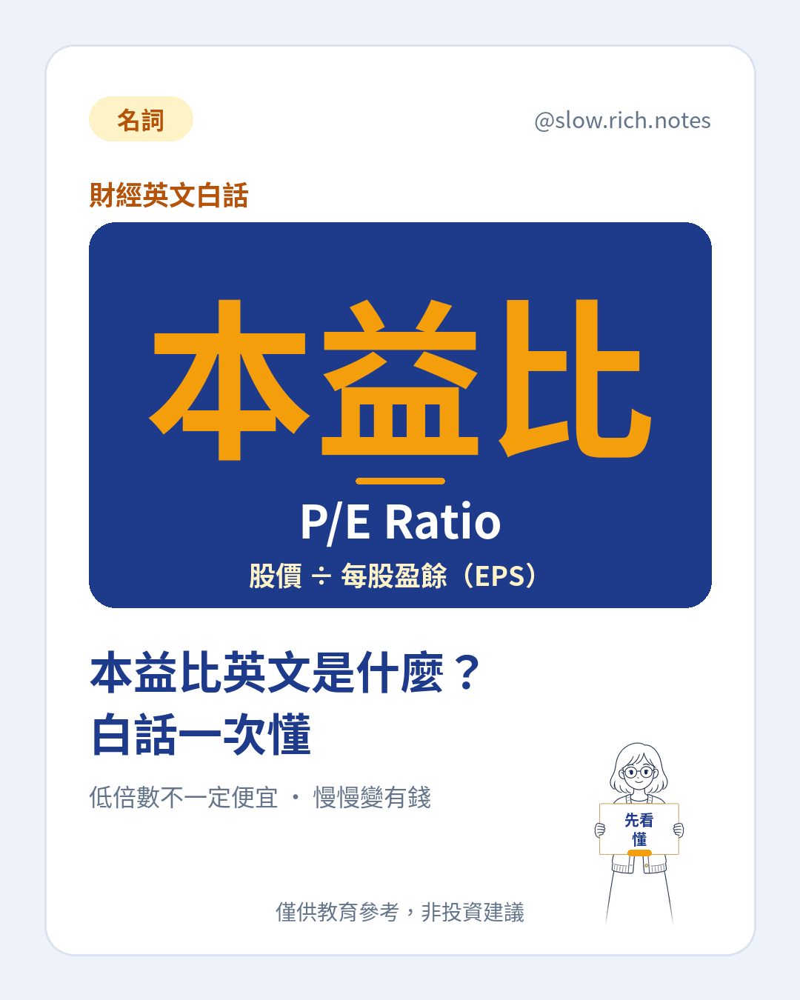

本益比英文是 P/E Ratio（Price-to-Earnings Ratio），意思是股價除以每股盈餘（EPS），也就是市場現在願意為公司每一元獲利付出多少倍價格。它也常被寫成 PE 或 PER；台灣叫本益比，中國大陸和香港多叫市盈率，指的是同一個指標。財報、新聞和看盤軟體常直接寫 P/E 或 PE Ratio，所以很多人會先查這個英文。想先看短版定義，可以讀我們的本益比名詞解釋。
怎麼算呢？公式是 本益比 ＝ 股價 ÷ 每股盈餘（EPS）。分母的每股盈餘，就是把公司賺到的錢，平均算到每一股是多少，細節可以看每股盈餘／EPS。舉個例子：股價 200 元、EPS 10 元（假設例子），本益比就是 200 ÷ 10 ＝ 20 倍（假設例子）。如果股價一樣是 200 元，EPS 改成 20 元（假設例子），本益比就變成 10 倍（假設例子）。同一個價格，獲利不同，倍數就不一樣。20 倍（假設例子）也可以粗想成：若獲利從此不變，大約要 20 年（假設例子）才用盈餘回本；不過公司通常不會把盈餘全部分完，所以這只是幫助理解的直覺，不是保證回本的年限。
那本益比高或低，該怎麼看？重點是：沒有適用所有公司的「合理倍數」。要跟同一家公司自己的歷史比、跟同一產業比，也要一起想 EPS 之後會不會變。倍數偏高，可能是市場期待成長，也可能只是價格已經先把樂觀的假設反映進去了。倍數偏低，看起來像比較便宜，但也可能是市場預期獲利會變差，掉進價值陷阱。所以看到很高或很低的倍數，先別急著說貴或便宜，先問這是跟誰比、EPS 靠不靠得住。還有一個常被忽略的情況，和景氣循環有關：景氣高峰時 EPS 被撐大，本益比會看起來特別低。假設股價 200 元，景氣好時 EPS 20 元，本益比是 10 倍；景氣回落、EPS 只剩 5 元，本益比就變成 40 倍（皆假設例子）。另外，EPS 為零或虧損時，本益比常是負值或顯示 N/A，沒有一般比較意義；一次性買賣資產、匯兌這類非經常損益，也會讓倍數失真。
看英文資料時，還常會碰到幾個相關說法。EPS（Earnings Per Share，每股盈餘）就是公式的分母。Trailing P/E（歷史本益比，也常稱 TTM P/E）用的是過去已公布的盈餘，通常是近十二個月；Forward P/E（預估本益比）用的是還沒發生的預估盈餘，而預估有可能落空。假設股價仍是 200 元，過去一年 EPS 10 元，歷史本益比是 20 倍；若預估明年 EPS 16 元，預估本益比就是 12.5 倍（皆假設例子）。較低的預估倍數，只代表市場假設獲利會成長，不是保證。另外還有 PEG（Price/Earnings to Growth，本益成長比），是把本益比再拿去對成長率，想進一步了解可以讀本益成長比／PEG。
新手常見三個坑，建議先記下來。第一，本益比低不一定等於便宜：可能是獲利即將變差，或景氣高峰把分母撐大。第二，本益比高也不等於一定貴、不能碰：也可能只是市場在為成長付較高價錢，要看成長能不能跟得上。第三，沒分清歷史本益比還是預估本益比，或把不同產業的倍數直接拿來比，都很容易比出錯誤結論。看財經新聞遇到一串名詞時，可以先讀財經新聞常會遇到的 10 個詞，該篇也有收錄本益比。
一句話收尾：本益比英文是 P/E Ratio（Price-to-Earnings Ratio），等於股價除以 EPS。它是拿來比較的參考點，不是買賣訊號，也不會替你決定要不要進出。想複習短版定義，可以回到本益比名詞解釋慢慢看。先分清歷史還是預估、跟誰比、EPS 會不會變，會比只盯著一個倍數更踏實。
本篇為投資教育內容，僅供參考，非投資建議，亦不針對特定股票或商品。文中數字皆為假設例子，實際以公司公告與主管機關資訊為準。